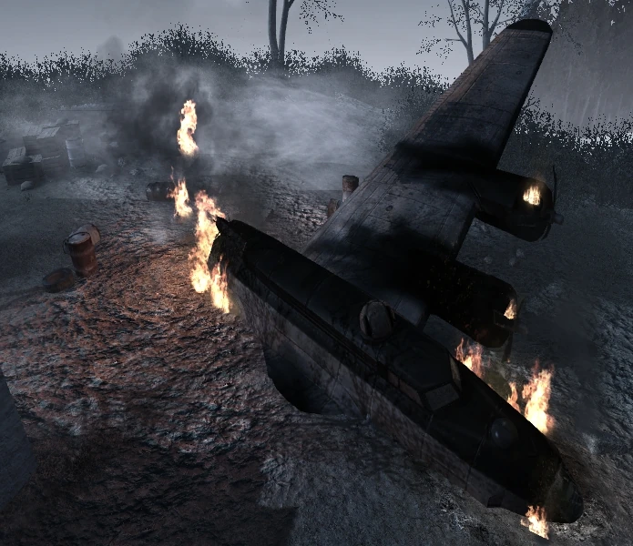

NACH DER UNTOTEN

"Los enviaste al corazon del Reich. Pensabas que habian muerto. Te quivocaste"
DESCRIPCIÓN
Nacht der Untoten (en alemán: "la noche de los muertos vivientes") es el primer mapa del modo zombis. Es el primer mapa en ser desbloqueado en Call of Duty: World at War y en general del modo de Zombies. Fue lanzado en la Edición de Prestigio de Call of Duty: Black Ops, así como en el pack de mapas Rezurrection el 23 de agosto de 2011.
MAPA EN GENERAL
PRIMERA HABITACION
Esta habitación cuenta con cinco ventanas donde los Zombies pueden romper las barreras y acceder, y que pueden ser reparadas. Es la sala más grande y más abierta en el mapa. La puerta a la derecha de la ventana más grande tiene la palabra "Help" (en inglés: "ayuda") escrita en ella. Esto lleva a la "Sala de Ayuda". El otro camino es a través de la pila de escombros situado hacia las escaleras en el centro de la habitación, este camino conduce arriba.
Habitacion de ayuda
La sala de Ayuda tiene dos ventanas y una pared que conduce a una cueva sin salida que puede ser cerrada con bloques de piedra. Es un poco más pequeña que la habitación de inicio, y tiene un radio (que reproduce música cuando es apuñalado o disparado). La Caja Misteriosa está disponible en esta sala, así como dos armas de pared: la Thompson y la Escopeta de doble cañón. El único camino que conduce fuera de esta habitación (aparte de la puerta "Help") son los escombros que bloquean el camino de las escaleras a la habitación de arriba.
Segunda planta
La habitación de arriba tiene cuatro ventanas y una ligera elevación. Es del mismo tamaño que la habitación de Help, pero incluye más escombros y desechos que rodean la zona situada, por lo que es más difícil de maniobrar alrededor de esta habitación. En esta habitación están disponibles la Escopeta Recortada de Dos Cañones, la BAR, la M1897 Trench Gun, el Gabinete de francotirador (que al abrirse da una Kar-98K con mira) y Stielhandgranates.